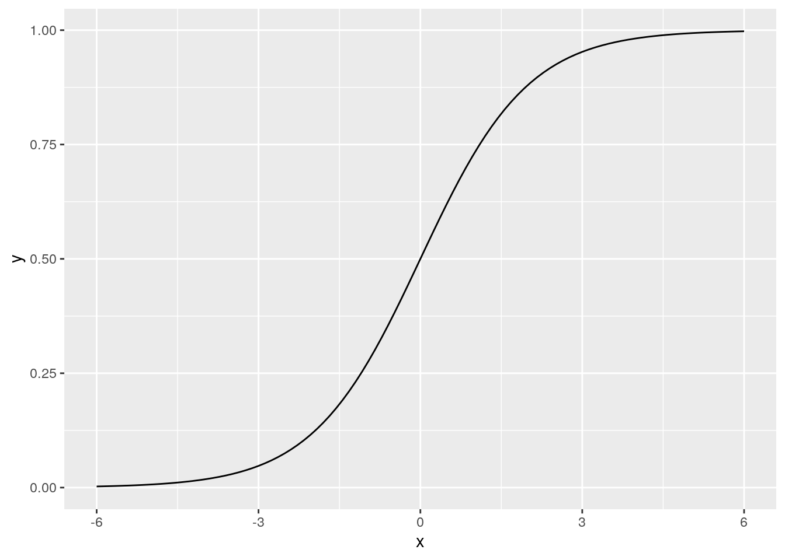
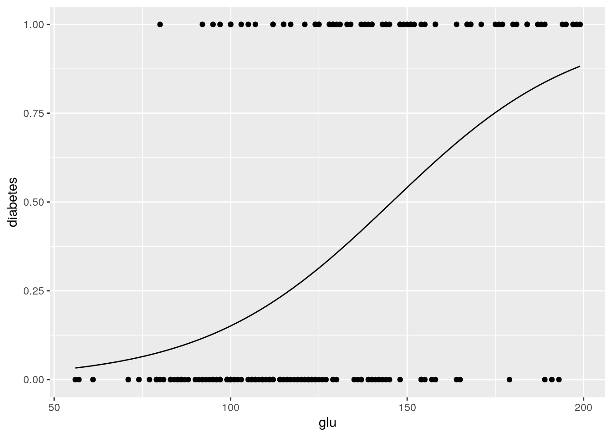
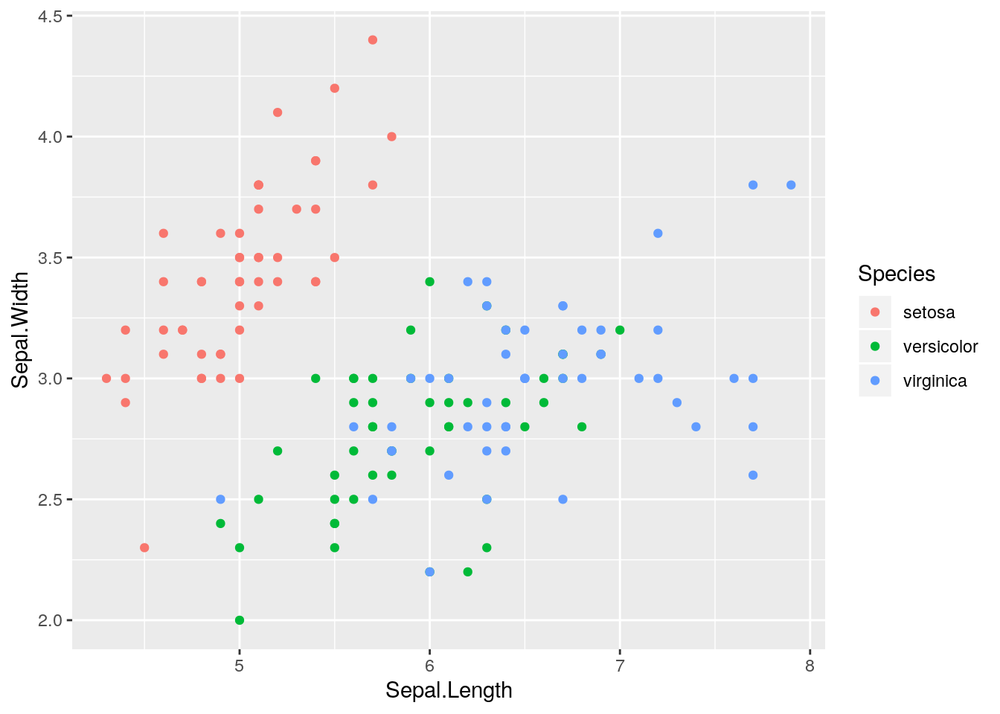
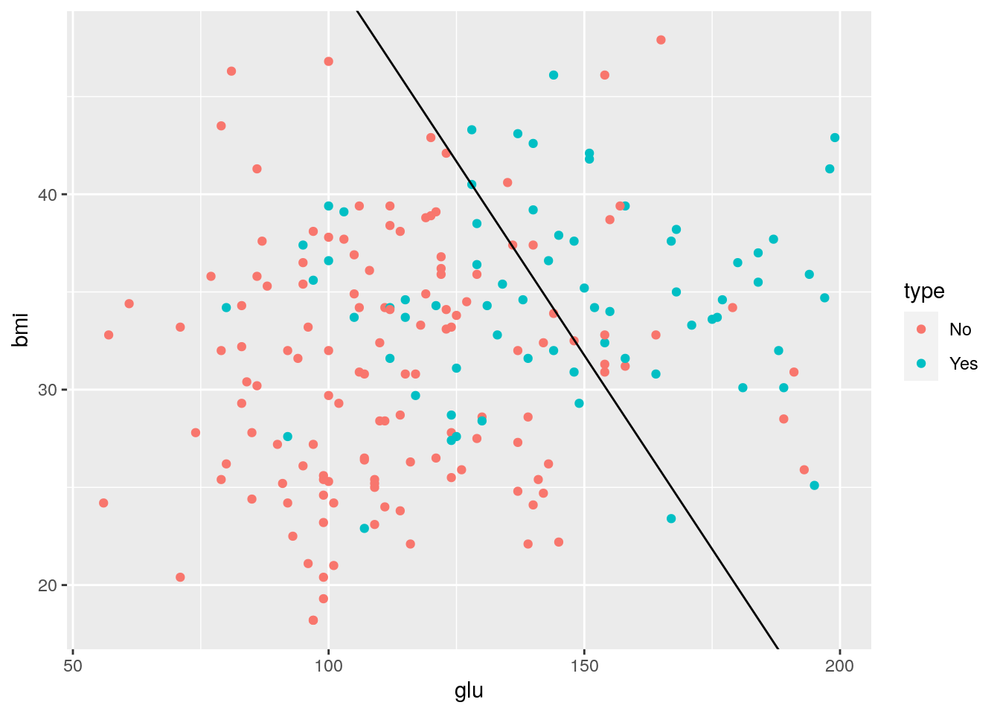
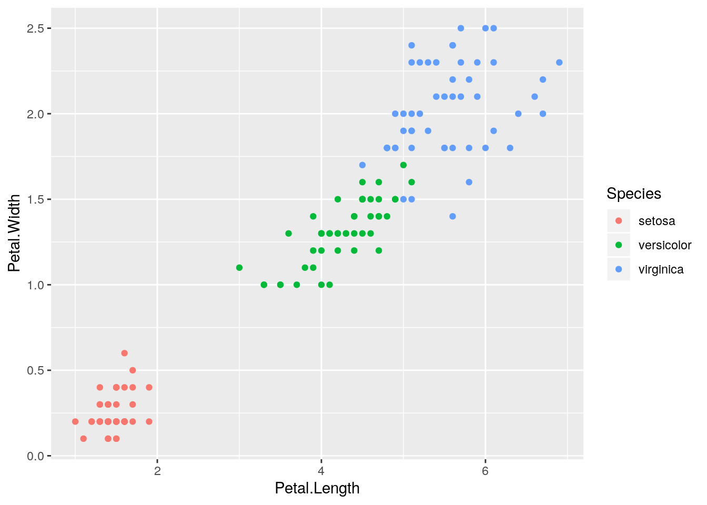
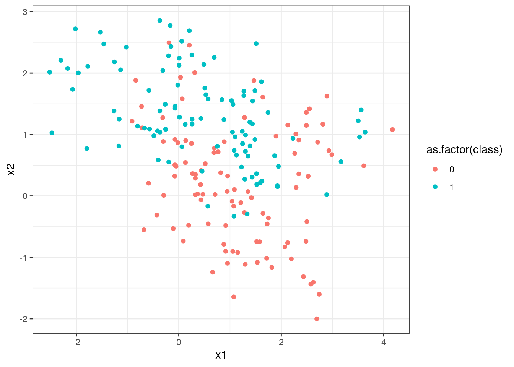
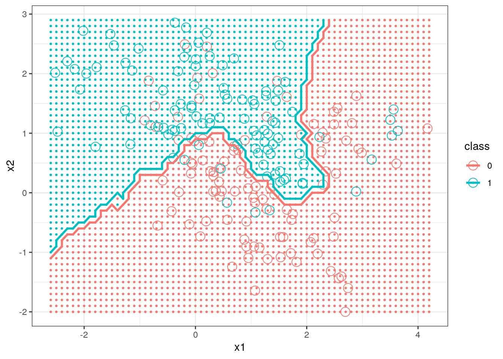

Chapter 10 Classification
Classification problems are quite common. For example a spam filter is asked to classify incoming messages into spam or non-spam, based on factors such as the sender’s address, the subject of the message, the contents of the message, and so on. As another example, a doctor diagnosing a patient into one of four possible diagnoses based on symptoms, blood tests, and medical history is another form of classification. Or a bank may want to determine (prior to giving a loan) whether an applicant for a loan will default on the loan, again based on several variables such as income, financial history, etc.
Classification methods are both extremely useful and an active area of research in statistics. In this chapter we will learn about two common, and somewhat different, classification methods, logistic regression and \(k\) nearest neighbors. A very good introduction to classification and many other “Statistical Learning” methods is James et al. (2014). The abbreviated treatment in this chapter draws from James et al. (2014).
10.1 Logistic Regression
Logistic regression is widely used to relate a categorical response variable to one or more (continuous or categorical) predictors. Initially we will consider the simplest case where the response \(Y\) has only two possible values (we’ll assume the values are \(0\) and \(1\)) and where there is only one continuous predictor \(X\). We would like to predict the value of \(Y\) based on the value of the predictor \(X\). Let \(p(X) = P(Y = 1 | X)\).51. We will model \(p(X)\) with the logistic function, which takes values between \(0\) and \(1\), which is of course appropriate for modeling a probability:
\[ p(X) = \frac{e^{\beta_0 + \beta_1 X}}{1 + e^{\beta_0 + \beta_1 X}}. \]
A graph of this function when \(\beta_0=0\) and \(\beta_1 = 1\) shows the characteristic shape.
> library(ggplot2)
> logistic <- function(x){exp(x)/(1 + exp(x))}
> ggplot(data.frame(x = c(-6, 6)), aes(x)) +
+ stat_function(fun = logistic)
To make this more concrete, we will consider a data set on a population of women who were over 21 years of age, lived near Phoenix, Arizona, and were of Pima Indian heritage. The data included diabetes status (yes or no) and seven possible predictor variables such as age, number of pregnancies, body mass index, etc. The original data are from the National Institute of Diabetes and Digestive and Kidney Diseases. These data were cleaned and are available in the MASS package in R. In the package the data frame Pima.tr contains 200 randomly selected cases from the full data set, which we will use to find a classifier. The data frame Pima.te contains the remaining 332 cases, which we will use to test the classifier on new data.52
npreg glu bp skin bmi ped age type
1 5 86 68 28 30.2 0.364 24 No
2 7 195 70 33 25.1 0.163 55 Yes
3 5 77 82 41 35.8 0.156 35 No
4 0 165 76 43 47.9 0.259 26 No
5 0 107 60 25 26.4 0.133 23 No
6 5 97 76 27 35.6 0.378 52 YesIt will be more convenient to code the presence or absence of diabetes by 1 and 0, so we first create another column in the data frame with this coding:
> Pima.tr$diabetes <- rep(0, dim(Pima.tr)[1])
> Pima.tr$diabetes[Pima.tr$type == "Yes"] <- 1
> head(Pima.tr) npreg glu bp skin bmi ped age type diabetes
1 5 86 68 28 30.2 0.364 24 No 0
2 7 195 70 33 25.1 0.163 55 Yes 1
3 5 77 82 41 35.8 0.156 35 No 0
4 0 165 76 43 47.9 0.259 26 No 0
5 0 107 60 25 26.4 0.133 23 No 0
6 5 97 76 27 35.6 0.378 52 Yes 1We will begin with glu as a predictor, and of course type as the response. So we want to find the values \(\beta_0\) and \(\beta_1\) which provide the best fit for the model
\[ P(\text{yes} | \text{glu}) = \frac{e^{\beta_0 + \beta_1 (\text{glu})}}{1 + e^{\beta_0 + \beta_1 (\text{glu})}} \]
Usually maximum likelihood methods are used to fit the model.
In R we will use the function glm to fit logistic regression models. The glm function fits a wide variety of models. To specify the logistic regression model we specify family = binomial as an argument to glm. We also must specify the predictor and response variables via the model formula, which in our case will be diabetes ~ glu to indicate that diabetes (i.e., type recoded) is the response and glu is the predictor; also we specify the data frame, which in our case is Pima.tr.
Call: glm(formula = diabetes ~ glu, family = binomial, data = Pima.tr)
Coefficients:
(Intercept) glu
-5.5036 0.0378
Degrees of Freedom: 199 Total (i.e. Null); 198 Residual
Null Deviance: 256
Residual Deviance: 207 AIC: 211
Call:
glm(formula = diabetes ~ glu, family = binomial, data = Pima.tr)
Deviance Residuals:
Min 1Q Median 3Q Max
-1.971 -0.779 -0.529 0.849 2.263
Coefficients:
Estimate Std. Error z value Pr(>|z|)
(Intercept) -5.50364 0.83608 -6.58 0.000000000046
glu 0.03778 0.00628 6.02 0.000000001756
(Intercept) ***
glu ***
---
Signif. codes:
0 '***' 0.001 '**' 0.01 '*' 0.05 '.' 0.1 ' ' 1
(Dispersion parameter for binomial family taken to be 1)
Null deviance: 256.41 on 199 degrees of freedom
Residual deviance: 207.37 on 198 degrees of freedom
AIC: 211.4
Number of Fisher Scoring iterations: 4(Intercept)
-5.504 glu
0.03778 The coefficients \(\beta_0\) and \(\beta_1\) are approximately -5.504 and 0.038, respectively. So for example we can estimate the probability that a woman in this population whose glucose level is 150 would be diabetic as
[1] 0.5488We can plot the fitted probabilities along with the data “by hand”.
> diabetes.logistic.1 <- function(x){
+ exp(beta0.lr.1+ beta1.lr.1*x)/(1 + exp(beta0.lr.1+
+ beta1.lr.1*x))
+ }
> ggplot(Pima.tr, aes(x = glu, y = diabetes)) +
+ stat_function(fun = diabetes.logistic.1) + geom_point()
The ggplot2 package also provides a way to do this more directly, using stat_smooth.
> ggplot(Pima.tr, aes(x = glu, y = diabetes)) +
+ geom_point() +
+ stat_smooth(method = "glm",
+ method.args = list(family = "binomial"), se = FALSE)
From these graphics we can see that although glucose level and diabetes are related, there are many women with high glucose levels who are not diabetic, and many with low glucose levels who are diabetic, so likely adding other predictors to the model will help.
Next let’s see how the model does in predicting diabetes status in the data we did not use for fitting the model. We will predict diabetes for anyone whose glucose level leads to a model-based probability greater than \(1/2\). First we use the predict function to compute the probabilities, and then use these to make predictions.
npreg glu bp skin bmi ped age type
1 6 148 72 35 33.6 0.627 50 Yes
2 1 85 66 29 26.6 0.351 31 No
3 1 89 66 23 28.1 0.167 21 No
4 3 78 50 32 31.0 0.248 26 Yes
5 2 197 70 45 30.5 0.158 53 Yes
6 5 166 72 19 25.8 0.587 51 Yes 1 2 3 4 5 6
0.52207 0.09179 0.10519 0.07199 0.87433 0.68319 The predict function (with type = "response" specified) provides \(p(x) = P(Y = 1 | X = x)\) for all the \(x\) values in a data frame. In this case we specified the data frame Pima.te since we want to know how the model does in predicting diabetes in a new population, i.e., in a population that wasn’t used to “train” the model.
> diabetes.predict.1 <- rep("No", dim(Pima.te)[1])
> diabetes.predict.1[diabetes.probs.1 > 0.5] <- "Yes"
> head(diabetes.predict.1)[1] "Yes" "No" "No" "No" "Yes" "Yes"
diabetes.predict.1 No Yes
No 206 58
Yes 17 51[1] 0.7741The table (sometimes called a confusion matrix) has the predictions of the model in the rows, so for example we see that the model predicts that \(206 + 58 = 264\) of the women will not be diabetic, and that \(17+51 = 68\) of the women will be diabetic. More interesting of course are the cells themselves. For example, of the \(206 + 17 = 223\) women who are not diabetic in Pima.te, the model correctly classifies 206, and misclassifies 17. A classifier that predicted perfectly for the test data would have zeros off the diagonal.
10.1.1 Adding Predictors
If we have \(p\) predictors \(X = (X_1, \dots, X_p)\), the logistic model becomes
\[ p(X) = p(X) = \frac{e^{\beta_0 + \beta_1 X + \dots + \beta_p X_p}}{1 + e^{\beta_0 + \beta_1 X + \dots + \beta_p X_p}}. \]
Although there is a lot more notation to keep track of, the basic ideas are the same as they were for the one predictor model. We will next see how adding bmi, the body mass index, affects predictions of diabetes.
Call: glm(formula = diabetes ~ glu + bmi, family = binomial, data = Pima.tr)
Coefficients:
(Intercept) glu bmi
-8.2161 0.0357 0.0900
Degrees of Freedom: 199 Total (i.e. Null); 197 Residual
Null Deviance: 256
Residual Deviance: 198 AIC: 204
Call:
glm(formula = diabetes ~ glu + bmi, family = binomial, data = Pima.tr)
Deviance Residuals:
Min 1Q Median 3Q Max
-2.058 -0.757 -0.431 0.801 2.249
Coefficients:
Estimate Std. Error z value Pr(>|z|)
(Intercept) -8.21611 1.34697 -6.10 0.0000000011
glu 0.03572 0.00631 5.66 0.0000000152
bmi 0.09002 0.03127 2.88 0.004
(Intercept) ***
glu ***
bmi **
---
Signif. codes:
0 '***' 0.001 '**' 0.01 '*' 0.05 '.' 0.1 ' ' 1
(Dispersion parameter for binomial family taken to be 1)
Null deviance: 256.41 on 199 degrees of freedom
Residual deviance: 198.47 on 197 degrees of freedom
AIC: 204.5
Number of Fisher Scoring iterations: 4Now we look at predictions from this model.
1 2 3 4 5 6
0.52359 0.05810 0.07530 0.06662 0.82713 0.50879 > diabetes.predict.2 <- rep("No", dim(Pima.te)[1])
> diabetes.predict.2[diabetes.probs.2 > 0.5] <- "Yes"
> head(diabetes.predict.2)[1] "Yes" "No" "No" "No" "Yes" "Yes"
diabetes.predict.2 No Yes
No 204 54
Yes 19 55[1] 0.7801Adding bmi as a predictor did not improve the predictions by very much!
Let \(x_1\) and \(x_2\) represent glucose and bmi levels. We classify a subject as “diabetic” if the fitted \(p(X)\) is greater than \(0.5\), i.e., if the fitted probability of diabetes is greater than the fitted probability of not diabetes. The boundary for our decision is where these two fitted probabilities are equal, i.e., where
\[ \frac{P(Y = 1 | (x_1, x_2))}{P(Y = 0 | (x_1, x_2))} = \frac{P(Y = 1 | (x_1, x_2))}{1 - P(Y = 1 | (x_1, x_2))} = 1. \]
Writing these out in terms of the logistic regression model, taking logarithms, and performing some algebra leads to the following (linear!) decision boundary:
\[ x_2 = -\frac{\beta_0}{\beta_2} - \frac{\beta_1}{\beta_2} x_1. \]
The diabetes training data along with the decision boundary are plotted below.
> lr.int <- -coef(diabetes.lr2)[1]/coef(diabetes.lr2)[3]
> lr.slope <- -coef(diabetes.lr2)[2]/coef(diabetes.lr2)[3]
> ggplot(Pima.tr, aes(x = glu, y = bmi)) +
+ geom_point(aes(color = type)) +
+ geom_abline(intercept = lr.int, slope = lr.slope)
10.1.2 More than Two Classes
Logistic regression methods also are applicable to classification contexts where there are more than two classes. Consider for example Fisher’s iris data.
Sepal.Length Sepal.Width Petal.Length Petal.Width
1 5.1 3.5 1.4 0.2
2 4.9 3.0 1.4 0.2
3 4.7 3.2 1.3 0.2
4 4.6 3.1 1.5 0.2
5 5.0 3.6 1.4 0.2
6 5.4 3.9 1.7 0.4
Species
1 setosa
2 setosa
3 setosa
4 setosa
5 setosa
6 setosa'data.frame': 150 obs. of 5 variables:
$ Sepal.Length: num 5.1 4.9 4.7 4.6 5 5.4 4.6 5 4.4 4.9 ...
$ Sepal.Width : num 3.5 3 3.2 3.1 3.6 3.9 3.4 3.4 2.9 3.1 ...
$ Petal.Length: num 1.4 1.4 1.3 1.5 1.4 1.7 1.4 1.5 1.4 1.5 ...
$ Petal.Width : num 0.2 0.2 0.2 0.2 0.2 0.4 0.3 0.2 0.2 0.1 ...
$ Species : Factor w/ 3 levels "setosa","versicolor",..: 1 1 1 1 1 1 1 1 1 1 ...

Here the potential predictors are sepal width, sepal length, petal width, and petal length. The goal is to find a classifier that will yield the correct species. From the scatter plots it should be pretty clear that a model with petal length and petal width as predictors would classify the data well. Although in a sense this is too easy, these data do a good job of illustrating logistic regression with more than two classes.
Before doing that we randomly choose 75 of the 150 rows of the data frame to be the training sample, with the other 75 being the test sample.
> set.seed(321)
> selected <- sample(1:150, replace = FALSE, size = 75)
> iris.train <- iris[selected,]
> iris.test <- iris[-selected,]There are several packages which implement logistic regression for data with more than two classes. We will use the VGAM package. The function vglm within VGAM implements logistic regression (and much more).
> library(VGAM)
> iris.lr <- vglm(Species ~ Petal.Width + Petal.Length,
+ data = iris.train, family = multinomial)
> summary(iris.lr)
Call:
vglm(formula = Species ~ Petal.Width + Petal.Length, family = multinomial,
data = iris.train)
Pearson residuals:
Min 1Q
log(mu[,1]/mu[,3]) -0.0000397 0.0000000175
log(mu[,2]/mu[,3]) -1.5279112 -0.0020907887
Median 3Q Max
log(mu[,1]/mu[,3]) 0.0000000257 0.0000000395 0.0000796
log(mu[,2]/mu[,3]) 0.0000000972 0.0101234167 1.6385058
Coefficients:
Estimate Std. Error z value Pr(>|z|)
(Intercept):1 104.97 8735.20 NA NA
(Intercept):2 52.71 27.05 NA NA
Petal.Width:1 -41.55 21914.63 NA NA
Petal.Width:2 -9.18 4.49 -2.04 0.041 *
Petal.Length:1 -18.93 8993.53 NA NA
Petal.Length:2 -7.62 4.90 -1.55 0.120
---
Signif. codes:
0 '***' 0.001 '**' 0.01 '*' 0.05 '.' 0.1 ' ' 1
Names of linear predictors: log(mu[,1]/mu[,3]),
log(mu[,2]/mu[,3])
Residual deviance: 14.65 on 144 degrees of freedom
Log-likelihood: -7.324 on 144 degrees of freedom
Number of Fisher scoring iterations: 21
Warning: Hauck-Donner effect detected in the following estimate(s):
'(Intercept):1', '(Intercept):2', 'Petal.Width:1', 'Petal.Length:1'
Reference group is level 3 of the responseNotice that the family is specified as multinomial rather than binomial since we have more than two classes. When run with these data, the vglm function returns several (about 20) warnings. These occur mainly because the classes are so easily separated, and are suppressed above.
Next we compute the probabilities for the test data.
setosa versicolor
2 1 0.00000000000009874
5 1 0.00000000000009874
6 1 0.00000000190561922
7 1 0.00000000000251434
10 1 0.00000000000001202
11 1 0.00000000000030599
virginica
2 0.00000000000000000000000000000034016
5 0.00000000000000000000000000000034016
6 0.00000000000000000000000040468850399
7 0.00000000000000000000000000002168557
10 0.00000000000000000000000000000003543
11 0.00000000000000000000000000000225863At least for the first six cases, one probability is close to one and the other two are close to zero, reflecting the fact that this is an easy classification problem. Next we extract the actual predictions. For these, we want to choose the highest probability in each row. The which.max function makes this easy. Before applying this to the fitted probabilities, we illustrate its use. Take notice that which.max() returns the position of the highest probability, and not the actualy highest probability itself.
[1] 5[1] 2 2 5 6 7 10 11
1 1 1 1 1 1 > class.predictions[class.predictions == 1] <- levels(iris$Species)[1]
> class.predictions[class.predictions == 2] <- levels(iris$Species)[2]
> class.predictions[class.predictions == 3] <- levels(iris$Species)[3]
> head(class.predictions) 2 5 6 7 10 11
"setosa" "setosa" "setosa" "setosa" "setosa" "setosa" Next we create the confusion matrix.
class.predictions setosa versicolor virginica
setosa 25 0 0
versicolor 0 22 1
virginica 0 0 2710.2 Nearest Neighbor Methods
Nearest neighbor methods provide a rather different way to construct classifiers, and have strengths (minimal assumptions, flexible decision boundaries) and weaknesses (computational burden, lack of interpretability) compared to logistic regression models.
In principle the idea is simple. Recall that the training set will have both \(x\) and \(y\) values known, while the test set will have only \(x\) values known. Begin by choosing a positive integer \(k\) which will specify the number of neighbors to use in classification. To classify a point \(x\) in the training set, find the \(k\) closest \(x\) values in the training set, and choose the class which has the highest representation among the \(k\) points. The algorithm is called kNN for “k Nearest Neighbors”.
For example, suppose that \(k=10\) and the 10 nearest neighbors to a training \(x\) have classes \(1, 1, 3, 2, 3, 3, 3, 2, 3, 2\). Since there are five 3s, three 2s, and two 1s, the training point is assigned to class 3. Suppose that for another \(x\) the 10 nearest neighbors have classes \(1,1,1,2,3,1,3,3,3,2\). In this case there are four 1s and four 3s, so there is a tie for the lead. The nearest neighbor algorithm then will choose between 1 and 3 at random.
Although in principle kNN is simple, some issues arise. First, how should \(k\) be chosen? There is not an easy answer, but it can help to think of the extreme values for \(k\).
The largest possible \(k\) is the number of observations in the training set. For example suppose that the training set has \(10\) observations, with classes \(1, 1, 1, 2, 2, 2, 3, 3, 3, 3\). Then for any point in the test set, the \(k=10\) nearest neighbors will include ALL of the points in the training set, and hence every point in the test set will be classified in class 3. This classifier has low (zero) variance, but probably has high bias.
The smallest possible \(k\) is 1. In this case, each point in the test set is put in the same class as its nearest neighbor in the training set. This may lead to a very non-smooth and high variance classifier, but the bias will tend to be small.
A second issue that is relatively easy to deal with concerns the scales on which the \(x\) values are measured. If for example one \(x\) variable has a range from 2 to 4, while another has a range from 2000 to 4000, the distance between the test and training data will be dominated by the second variable. The solution that is typically used is to standardize all the variables (rescale them so that their mean is 0 and their standard deviation is 1).
These and other issues are discussed in the literature on kNN, but we won’t pursue them further.
There are at least three R packages which implement kNN, including class, kknn, and RWeka. We will use class below.
An example from Hastie, Tibshirani, and Friedman (2009) will be used to give a better sense of the role of \(k\) in the kNN algorithm. The example uses simulated data and shows the decision boundaries for kNN with \(k=15\) and \(k=1\).53. Although the R code used to draw the displays is given below, focus mainly on the graphics produced, and what they tell us about kNN.
First the data are read into R and graphed. The predictors x1 and x2, while not standardized, have very similar standard deviations, so we will not standardize these data before applying kNN.
> u.knn <- "https://www.finley-lab.com/files/data/knnExample.csv"
> knnExample <- read.csv(u.knn, header=TRUE)
> str(knnExample)'data.frame': 200 obs. of 3 variables:
$ x1 : num 2.5261 0.367 0.7682 0.6934 -0.0198 ...
$ x2 : num 0.3211 0.0315 0.7175 0.7772 0.8673 ...
$ class: int 0 0 0 0 0 0 0 0 0 0 ...> ggplot(data = knnExample, aes(x = x1, y = x2)) +
+ geom_point(aes(color = as.factor(class))) +
+ theme_bw()
Next a large set of test data is created using the expand.grid function, which creates a data frame with all possible combinations of the arguments. First a simple example to illustrate the function, then the actual creation of the training set. The test set covers the range of the x1 and x2 values in the training set.
x y
1 1 5.0
2 2 5.0
3 1 3.4
4 2 3.4
5 1 2.0
6 2 2.0[1] -2.521[1] 4.171[1] -2[1] 2.856Next the kNN with \(k=15\) is fit. Notice that the first argument gives the \(x\) values in the training set, the next argument gives the \(x\) values in the test set, the third argument gives the \(y\) values (labels) from the training set. The fourth argument gives \(k\), and the fifth argument asks for the function to return the probabilities of membership (that is, the proportion of the nearest neighbors which were in the majority class) as well as the class assignments.
> library(class)
> Example_knn <- knn(knnExample[,c(1,2)], x.test, knnExample[,3], k = 15, prob = TRUE)
> prob <- attr(Example_knn, "prob")
> head(prob)[1] 0.6667 0.6667 0.6667 0.7333 0.7333 0.7333Next the graphs are created. This is somewhat complex, since we want to plot the test data colored by the class they were assigned to by the kNN classifier as background, the training data (using a different symbol), and the decision boundary.
> library(dplyr)
> df1 <- mutate(x.test, prob = prob, class = 0, prob_cls = ifelse(Example_knn == class, 1, 0))
> str(df1)'data.frame': 3450 obs. of 5 variables:
$ x1 : num -2.6 -2.5 -2.4 -2.3 -2.2 -2.1 -2 -1.9 -1.8 -1.7 ...
$ x2 : num -2 -2 -2 -2 -2 -2 -2 -2 -2 -2 ...
$ prob : num 0.667 0.667 0.667 0.733 0.733 ...
$ class : num 0 0 0 0 0 0 0 0 0 0 ...
$ prob_cls: num 1 1 1 1 1 1 1 1 1 1 ...> df2 <- mutate(x.test, prob = prob, class = 1, prob_cls = ifelse(Example_knn == class, 1, 0))
> bigdf <- bind_rows(df1, df2)
>
> names(knnExample)[1] "x1" "x2" "class"> ggplot(bigdf) +
+ geom_point(aes(x=x1, y =x2, col=class), data = mutate(x.test, class = Example_knn), size = 0.5) +
+ geom_point(aes(x = x1, y = x2, col = as.factor(class)), size = 4, shape = 1, data = knnExample) +
+ geom_contour(aes(x = x1, y = x2, z = prob_cls, group = as.factor(class), color = as.factor(class)), size = 1, bins = 1, data = bigdf) + theme_bw()Next we graph the decision boundary of kNN with \(k=1\).
> Example_knn <- knn(knnExample[,c(1,2)], x.test, knnExample[,3], k = 1, prob = TRUE)
> prob <- attr(Example_knn, "prob")
> head(prob)[1] 1 1 1 1 1 1> df1 <- mutate(x.test, prob = prob, class = 0, prob_cls = ifelse(Example_knn == class, 1, 0))
> str(df1)'data.frame': 3450 obs. of 5 variables:
$ x1 : num -2.6 -2.5 -2.4 -2.3 -2.2 -2.1 -2 -1.9 -1.8 -1.7 ...
$ x2 : num -2 -2 -2 -2 -2 -2 -2 -2 -2 -2 ...
$ prob : num 1 1 1 1 1 1 1 1 1 1 ...
$ class : num 0 0 0 0 0 0 0 0 0 0 ...
$ prob_cls: num 1 1 1 1 1 1 1 1 1 1 ...> df2 <- mutate(x.test, prob = prob, class = 1, prob_cls = ifelse(Example_knn == class, 1, 0))
> bigdf <- bind_rows(df1, df2)
>
> ggplot(bigdf) + geom_point(aes(x = x1, y = x2, col = class), data = mutate(x.test, class = Example_knn), size = 0.5) + geom_point(aes(x = x1, y = x2, col = as.factor(class)), size = 4, shape = 1, data = knnExample) + geom_contour(aes(x = x1, y = x2, z = prob_cls, group = as.factor(class), color = as.factor(class)), size = 1, bins = 1, data = bigdf) + theme_bw()
10.2.1 kNN and the Diabetes Data
Next kNN is applied to the diabetes data. We will use the same predictors, glu and bmi that were used in the logistic regression example. Since the scales of the predictor variables are substantially different, they are standardized first. The value \(k=15\) is chosen for kNN.
> Pima.tr[,1:7] <- scale(Pima.tr[,1:7], center = TRUE, scale = TRUE)
> Pima.te[,1:7] <- scale(Pima.te[,1:7], center = TRUE, scale = TRUE)
> knn_Pima <- knn(Pima.tr[,c(2,5)], Pima.te[,c(2,5)], Pima.tr[,8], k = 15, prob=TRUE)
> table(knn_Pima, Pima.te[,8])
knn_Pima No Yes
No 206 55
Yes 17 54At least in terms of the confusion matrix, kNN with \(k=15\) performed about as well as logistic regression for these data.
10.2.2 Practice Problem
Produce a figure that displays how the number of false positives produced from the kNN classifier for the diabetes data set changes for all integer values of \(k\) from 1 to 40. Use this graph to justify whether or not \(k = 15\) was a valid choice for the number of neighbors.
10.2.3 kNN and the iris Data
Now kNN is used to classify the iris data. As before we use petal length and width as predictors. The scales of the two predictors are not particularly different, so we won’t standardize the predictors. Unsurprisingly kNN does well in classifying the test set for a wide variety of \(k\) values.
[1] 0.7316[1] 1.705 Sepal.Length Sepal.Width Petal.Length Petal.Width
77 6.8 2.8 4.8 1.4
88 6.3 2.3 4.4 1.3
58 4.9 2.4 3.3 1.0
96 5.7 3.0 4.2 1.2
126 7.2 3.2 6.0 1.8
17 5.4 3.9 1.3 0.4
Species
77 versicolor
88 versicolor
58 versicolor
96 versicolor
126 virginica
17 setosa> knn_iris <- knn(iris.train[,c(3,4)], iris.test[,c(3,4)], iris.train[,5], k=1, prob=TRUE)
> table(knn_iris, iris.test[,5])
knn_iris setosa versicolor virginica
setosa 25 0 0
versicolor 0 22 1
virginica 0 0 27> knn_iris <- knn(iris.train[,c(3,4)], iris.test[,c(3,4)], iris.train[,5], k=3, prob=TRUE)
> table(knn_iris, iris.test[,5])
knn_iris setosa versicolor virginica
setosa 25 0 0
versicolor 0 22 1
virginica 0 0 27> knn_iris <- knn(iris.train[,c(3,4)], iris.test[,c(3,4)], iris.train[,5], k=15, prob=TRUE)
> table(knn_iris, iris.test[,5])
knn_iris setosa versicolor virginica
setosa 25 0 0
versicolor 0 22 1
virginica 0 0 2710.3 Exercises
Exercise Classification Learning objectives: explore the logistic regression classification method; apply the kNN classification method; create confusion matrices to compare classification methods; plot classified data.
References
Hastie, Trevor, Robert Tibshirani, and Jerome Friedman. 2009. The Elements of Statistical Learning: Data Mining, Inference and Prediction. 2nd ed. Springer. http://www-stat.stanford.edu/~tibs/ElemStatLearn/.
James, G., D. Witten, T. Hastie, and R. Tibshirani. 2014. An Introduction to Statistical Learning: With Applications in R. Springer Texts in Statistics. Springer New York. https://books.google.com/books?id=at1bmAEACAAJ.
For those not familiar with probability notation, the right side of this equation reads as “The probability that Y = 1 given we know the value of X”)↩︎
This practice of randomly separating data into training data and testing data is a common practice for many classification methods.↩︎
The graphs below use code adapted from http://stackoverflow.com/questions/31234621/variation-on-how-to-plot-decision-boundary-of-a-k-nearest-neighbor-classifier-f↩︎